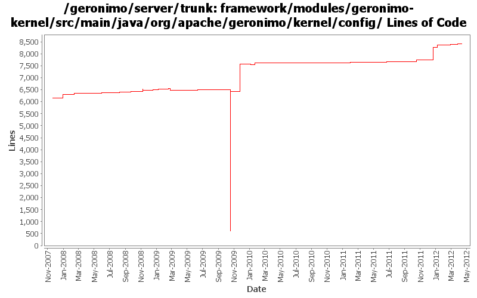

[root]/framework/modules/geronimo-kernel/src/main/java/org/apache/geronimo/kernel/config
 xstream
(0 files, 0 lines)
xstream
(0 files, 0 lines)

| Author | Changes | Lines of Code | Lines per Change |
|---|---|---|---|
| Totals | 202 (100.0%) | 9112 (100.0%) | 45.1 |
| djencks | 116 (57.4%) | 8239 (90.4%) | 71.0 |
| xuhaihong | 20 (9.9%) | 321 (3.5%) | 16.0 |
| gdamour | 10 (5.0%) | 162 (1.8%) | 16.2 |
| gawor | 17 (8.4%) | 157 (1.7%) | 9.2 |
| kevan | 3 (1.5%) | 49 (0.5%) | 16.3 |
| johnxiao | 1 (0.5%) | 44 (0.5%) | 44.0 |
| dwoods | 6 (3.0%) | 44 (0.5%) | 7.3 |
| jdillon | 19 (9.4%) | 36 (0.4%) | 1.8 |
| manugeorge | 2 (1.0%) | 31 (0.3%) | 15.5 |
| mcconne | 2 (1.0%) | 17 (0.2%) | 8.5 |
| xiaming | 1 (0.5%) | 7 (0.1%) | 7.0 |
| genspring | 3 (1.5%) | 3 (0.0%) | 1.0 |
| rickmcguire | 1 (0.5%) | 1 (0.0%) | 1.0 |
| jlaskowski | 1 (0.5%) | 1 (0.0%) | 1.0 |
getAfterNames() should return those elements which are dependent by the current element
1 lines of code changed in 1 file:
GERONIMO-5802 1. Only fail start when service module is failed 2. log missing dependency, for trunk
7 lines of code changed in 1 file:
GERONIMO-6224 NPE while accessing the system modules portlet
44 lines of code changed in 1 file:
GERONIMO-6251 determine if server is actually fully started, provide access to DependencyManager for osgi metadata purposes
96 lines of code changed in 1 file:
GERONIMO-6249 use extender pattern (in DependencyManager) instead of ConfigurationActivator
1 lines of code changed in 1 file:
GERONIMO-6240 make SharedLibExtender not depend on the (now non-service) DependencyManager
28 lines of code changed in 4 files:
GERONIMO-6240 Make several base geronimo functions (kernel, deployer, etc) DS services and make the car-maven-plugin take advantage of that. Server assembly doesn't work yet, builds framework.
511 lines of code changed in 7 files:
GERONIMO-6194 Sort gbeans while stopping the configuration
102 lines of code changed in 2 files:
slightly better logging
2 lines of code changed in 2 files:
GERONIMO-6058 Replace StringBuffer usage with StringBuilder
2 lines of code changed in 2 files:
GERONIMO-6021 read and write the config.info file using UTF-8 encoding
3 lines of code changed in 1 file:
Use all non-configuration bundles for DelegatingBundle for WABs. This avoids dynamic wires to be established on configuration bundles when looking up resources
29 lines of code changed in 1 file:
Fix the copy-paste error in the toString method
3 lines of code changed in 1 file:
GERONIMO-5769 Web Application Bundles (WABs) do not show up in admin console
3 lines of code changed in 1 file:
a. Add a lock for loadingConfiguration
b. Use fine-grained lock for getConfiguration
37 lines of code changed in 1 file:
GERONIMO-5782 Avoid a deadlock undeploying an EBA application
20 lines of code changed in 2 files:
Show all of all fail-to-start exceptions
2 lines of code changed in 1 file:
GERONIMO-5571 Console support for EBA modules:list EBA modules,start EBA modules,stop EBA modules and uninstall EBA moules.
0 lines of code changed in 2 files:
a. remove the use of configurationUrl \n b. Add a BundleAwareReference interface
11 lines of code changed in 1 file:
XBEAN-148 use new xbean-bundleutils
9 lines of code changed in 3 files:
GERONIMO-4909 The changes just remove the bundle if we unload the car from ConfigurationManager
30 lines of code changed in 2 files:
add some toString methods and some logging to help figure out what happens during deployment
12 lines of code changed in 1 file:
GERONIMO-5057 Use those xmlbeans generated by JAVA EE 6 schema files
0 lines of code changed in 2 files:
some minor updates
0 lines of code changed in 1 file:
remove unnecessary imports
0 lines of code changed in 1 file:
add DelegatingBundle that can delegate calls to multiple Bundles and remove classSource support
85 lines of code changed in 6 files:
GERONIMO-5008 Create util methods for all the Geronimo components
4 lines of code changed in 1 file:
GERONIMO-5008 Create util methods for all the Geronimo components
0 lines of code changed in 4 files:
prevent generating Manifest-Version header with null value
0 lines of code changed in 1 file:
do not start fragment bundles - they cannot be started
2 lines of code changed in 1 file:
GERONIMO-4911 Put osgi manifest info in environment, generate manifest in the deployer not in car-maven-plugin. Reduce use of jee-specs, try to eliminate spring car. Don't try to build plugingroups or assemblies until they actually build
1160 lines of code changed in 4 files:
1) register geronimo-managed mbean server as osgi service, 2) enable osgi jmx bundle to expose rfc139 mbeans, 3) add/update the shutdown command to use rfc139 mbean to stop the container, 4) update the debug properties for jdb to use geronimo defaults
3 lines of code changed in 1 file:
More plugin cleanup
1 lines of code changed in 1 file:
add bin/geronimo and bin/client that work just like before. bin/karaf will only start the karaf framework
1 lines of code changed in 1 file:
GERONIMO-4925 Temporarily enable the EditableConfigurationManager to avoid those plug-in compile errors.
121 lines of code changed in 2 files:
GERONIMO-4916 step 2 move sandbox osgi framework into trunk
5811 lines of code changed in 22 files:
GERONIMO-4916 step 1 remove old framwork
0 lines of code changed in 25 files:
implement toString for wrapper classloader
4 lines of code changed in 1 file:
GERONIMO-4217 Check for all data primitive types when shortcutting to the primordial classloader (Patch from Rex Wang)
10 lines of code changed in 1 file:
Handy way to add gbeans defined by annotations, from Gianny's classloader work
21 lines of code changed in 3 files:
(30 more)